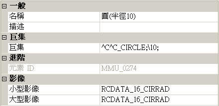
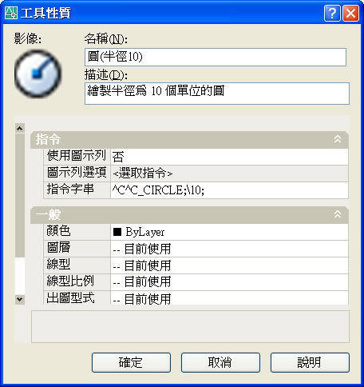
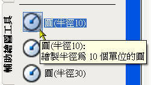

一般巨集使用反斜線 (\) 表示暫停以等待使用者輸入，使用分號 (;) 或 空格 表示按下 Enter 鍵。
下列巨集範例中，將繪製半徑為 10 個單位的圓。
^C^C_CIRCLE;\10;
巨集可應用的範圍為 下拉式功能表、工具列按鈕、工具選項板等。
-------------------------------------------------------------------------------------------------------------
※ 下拉式功能表
附圖:CUI功能表

附圖:CUI功能表巨集

附圖:輔助繪圖-下拉式功能表

※ 工具列按鈕
附圖:CUI工具列

附圖:CUI工具列巨集

附圖:輔助繪圖工具-工具列

※ 工具選項板
附圖:工具選項版巨集

附圖:輔助繪圖工具-工具選項版

•特殊字元 ^C^C 會取消任何執行中的指令。
•特殊字元底線 (_) 會自動將隨後的指令轉換為其他語言。
•項目 CIRCLE 會啟動 CIRCLE 指令。
•特殊字元反斜線 (\) 會使巨集執行暫停，以便使用者指定中心點。
•項目 10 是對半徑提示的回應。
•功能表巨集中的分號 (;) 會啟用 ENTER 鍵。
註:當你使用 SELECT 指令時會延遲巨集暫停後的繼續執行，巨集在完成物件選取後才繼續執行。當在特殊字元 ^C^C 前面加 * 符號，*^C^C即變成連續式巨集。
=================================================================
巨集範例說明:
^C^C_CIRCLE;\10;
使用者可能正在執行其他指令，當你點選了巨集；
1.^C^C ...會先取消執行中的指令
2.CIRCLE; ...下達 CIRCLE 指令 後 ENTER
3.\ ...請使用者指定圓的半徑
4.10; ...下達半徑為 10 後 ENTER
=================================================================
字元描述
------------------------------------------------------------------
; 啟用 Enter 鍵
[空格] 輸入一個空格；功能表項目中指令序列間的空格相當於按下空白鍵
\ 暫停以等待使用者輸入 (Accelerators 節中無法使用)
_ 轉換緊隨其後的 AutoCAD 指令與選項
+ 將功能表巨集延續到下一行 (如果是最後一個字元)
=* 顯示目前的頂層下拉功能表、快顯功能表或影像功能表
*^C^C 重複項目的字首
^B 開啟或關閉鎖點 (Ctrl+B)
^C 取消指令 (Esc)
^D 開啟或關閉座標顯示 (Ctrl+D)
^E 設定下一個等角平面 (Ctrl+E)
^G 開啟或關閉格點 (Ctrl+G)
^H 發出倒退鍵
^O 開啟或關閉正交
^P 開啟或關閉 MENUECHO
^Q 將所有提示、狀態列示和輸入回應至印表機 (Ctrl+Q)
^T 開啟或關閉數位板 (Ctrl+T)
^V 變更目前的視埠。
^Z 空字元，會抑制在功能表項目結尾自動加入空白鍵